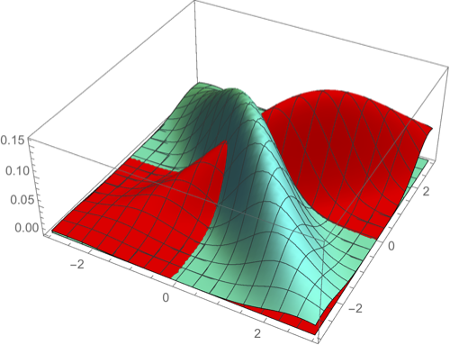
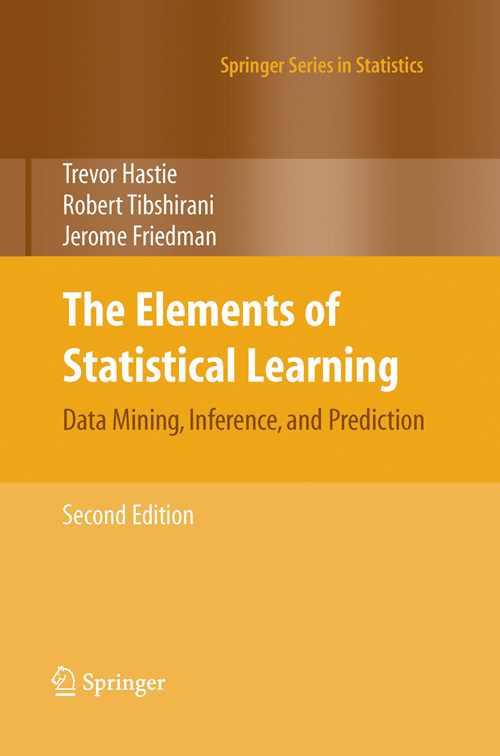
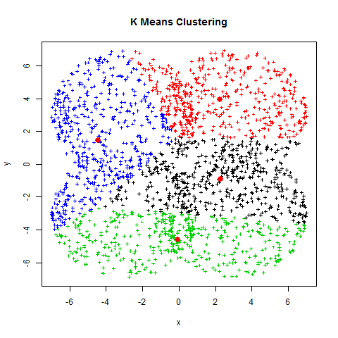

|

|
CS 189/289A
Introduction to Machine Learning
Jonathan
Shewchuk

(Please send email only if you don't want anyone but me to see it; otherwise,
use Piazza.
I check Piazza more often than email.)
Spring 2021
Mondays and Wednesdays, 7:30–9:00 pm
Begins Wednesday, January 20
Discussion sections begin Monday, January 25
My office hours:
TBA and by appointment.
(I'm usually free after the lectures too.)
|
This class introduces algorithms for learning,
which constitute an important part of artificial intelligence.
Topics include
- classification: perceptrons, support vector machines (SVMs),
Gaussian discriminant analysis (including linear discriminant analysis,
LDA, and quadratic discriminant analysis, QDA), logistic regression,
decision trees, neural networks, convolutional neural networks,
boosting, nearest neighbor search;
- regression: least-squares linear regression, logistic regression,
polynomial regression, ridge regression, Lasso;
- density estimation: maximum likelihood estimation (MLE);
- dimensionality reduction: principal components analysis (PCA),
random projection; and
- clustering: k-means clustering, hierarchical clustering,
spectral graph clustering.
Useful Links
Prerequisites
- Math 53 (or another vector calculus course),
- Math 54, Math 110, or EE 16A+16B (or another linear algebra course),
- CS 70, EECS 126, or Stat 134 (or another probability course).
- Enough programming experience to be able to debug complicated programs
without much help. (Unlike in a lower-division programming course,
the Teaching Assistants are under no obligation to look at your code.)
You should take these prerequisites quite seriously:
if you don't have them, I strongly recommend not taking CS 189.
If you want to brush up on prerequisite material:
- Here's a
short summary of
math for machine learning written by our former TA Garrett Thomas.
- Stanford's machine learning class provides additional reviews of
linear algebra
and
probability
theory.
- There's a fantastic collection of linear algebra visualizations
on YouTube by
3Blue1Brown
starting with
this
playlist, The Essence of Linear Algebra.
I highly recommend them,
even if you think you already understand linear algebra.
It's not enough to know how to work with matrix algebra equations;
it's equally important to have a geometric intuition for
what it all means.
- To learn matrix calculus (which will rear its head first in Homework 2),
check out the first two chapters of
The
Matrix Cookbook.
- Another locally written review of linear algebra appears in
this book
by Prof. Laurent El Ghaoui.
- An alternative guide to CS 189 material
(if you're looking for a second set of lecture notes besides mine),
written by our former TAs Soroush Nasiriany and Garrett Thomas,
is available
at this link.
I recommend reading my notes first, but reading the same material
presented a different way can help you firm up your understanding.
Textbooks


Both textbooks for this class are available free online.
Hardcover and eTextbook versions are also available.
-
Gareth James,
Daniela Witten,
Trevor Hastie, and
Robert Tibshirani,
An
Introduction to Statistical Learning with Applications in R,
Springer, New York, 2013. ISBN # 978-1-4614-7137-0.
See Amazon for hardcover or eTextbook.
-
Trevor Hastie,
Robert Tibshirani, and
Jerome Friedman,
The Elements of Statistical Learning:
Data Mining, Inference, and Prediction, second edition,
Springer, 2008.
See Amazon for hardcover or eTextbook.
Homework and
Exams
You have a total of 5 slip days that you can apply to your
semester's homework.
We will simply not award points for any late homework you submit that
would bring your total slip days over five.
If you are in the Disabled Students' Program and you are offered an extension,
even with your extension plus slip days combined,
no single assignment can be extended more than 5 days.
(We have to grade them sometime!)
The CS 289A Project
has a proposal due Friday, April 9.
The video is due Saturday, May 8, and
the final report is due Sunday, May 9.
Please sign up your group for a ten-minute meeting slot with one of the TAs on
this
Google spreadsheet before 11:59 PM on April 4.
If you need serious computational resources,
our former Teaching Assistant Alex Le-Tu has written lovely guides to
using
Google Cloud and
using
Google Colab.
Homework 1
is due Wednesday, January 27 at 11:59 PM.
(Here's just the written part. (sol))
Homework 2
is due Wednesday, February 10 at 11:59 PM.
(Here's just the written part. (sol))
Homework 3
is due Wednesday, February 24 at 11:59 PM.
(Here's just the written part. (sol))
Homework 4
is due Wednesday, March 10 at 11:59 PM.
(Here's just the written part. (sol))
Homework 5
is due Thursday, April 1 at 11:59 PM.
(Here's just the written part. (sol) (code sol))
Homework 6
is due Wednesday, April 21 at 11:59 PM.
(Here's just the written part. (sol))
Homework 7
is due Thursday, May 6 at 11:59 PM.
(Here's just the written part.)
The Midterm took place
on Wednesday, March 17 at 7:30–9:00 PM.
Please download the Honor Code, sign it,
scan it, and
submit
it to Gradescope by Tuesday, March 16 at 11:59 PM.
Previous midterms are available:
Without solutions:
Spring 2013,
Spring 2014,
Spring 2015,
Fall 2015,
Spring 2016,
Spring 2017,
Spring 2019,
Summer 2019,
Spring 2020 Midterm A,
Spring 2020 Midterm B,
Spring 2021.
With solutions:
Spring 2013,
Spring 2014,
Spring 2015,
Fall 2015,
Spring 2016,
Spring 2017,
Spring 2019,
Summer 2019,
Spring 2020 Midterm A,
Spring 2020 Midterm B,
Spring 2021.
The Final Exam will take place on Friday, May 14, 3–6 PM.
Previous final exams are available.
Without solutions:
Spring 2013,
Spring 2014,
Spring 2015,
Fall 2015,
Spring 2016,
Spring 2017,
Spring 2019,
Spring 2020.
With solutions:
Spring 2013,
Spring 2014,
Spring 2015,
Fall 2015,
Spring 2016,
Spring 2017,
Spring 2019,
Spring 2020.
Lectures
Now available:
The complete
semester's lecture notes (with table of contents and introduction).
The lecture Zoom meeting numbers and passwords are available on
Piazza.
Lecture 1 (January 20):
Introduction.
Classification, training, and testing.
Validation and overfitting.
Read ESL, Chapter 1.
My lecture notes (PDF).
The screencast.
Lecture 2 (January 25):
Linear classifiers.
Decision functions and decision boundaries.
The centroid method.
Perceptrons.
Read parts of the Wikipedia
Perceptron page.
Optional: Read ESL, Section 4.5–4.5.1.
My lecture notes (PDF).
The screencast.
Lecture 3 (January 27):
Gradient descent, stochastic gradient descent, and
the perceptron learning algorithm.
Feature space versus weight space.
The maximum margin classifier, aka hard-margin support vector machine (SVM).
Read ISL, Section 9–9.1.
My lecture notes (PDF).
The screencast.
Lecture 4 (February 1):
The support vector classifier, aka soft-margin support vector machine (SVM).
Features and nonlinear decision boundaries.
Read ESL, Section 12.2 up to and including the first paragraph of 12.2.1.
My lecture notes (PDF).
The screencast.
Lecture 5 (February 3):
Machine learning abstractions: application/data, model,
optimization problem, optimization algorithm.
Common types of optimization problems:
unconstrained, constrained (with equality constraints),
linear programs, quadratic programs, convex programs.
Optional: Read (selectively) the Wikipedia page on
mathematical
optimization.
My lecture notes (PDF).
The screencast.
Lecture 6 (February 8):
Decision theory: the Bayes decision rule and optimal risk.
Generative and discriminative models.
Read ISL, Section 4.4.1.
My lecture notes (PDF).
The screencast.
Lecture 7 (February 10):
Gaussian discriminant analysis, including
quadratic discriminant analysis (QDA) and linear discriminant analysis (LDA).
Maximum likelihood estimation (MLE) of the parameters of a statistical model.
Fitting an isotropic Gaussian distribution to sample points.
Read ISL, Section 4.4.
Optional: Read (selectively) the Wikipedia page on
maximum
likelihood.
My lecture notes (PDF).
The screencast.
February 15 is Presidents' Day.
Lecture 8 (February 17):
Eigenvectors, eigenvalues, and the eigendecomposition.
The Spectral Theorem for symmetric real matrices.
The quadratic form and ellipsoidal isosurfaces as
an intuitive way of understanding symmetric matrices.
Application to anisotropic normal distributions (aka Gaussians).
Read Chuong Do's
notes on the multivariate Gaussian distribution.
My lecture notes (PDF).
The screencast.
Lecture 9 (February 22):
Anisotropic normal distributions (aka Gaussians).
MLE, QDA, and LDA revisited for anisotropic Gaussians.
Read ISL, Sections 4.4 and 4.5.
My lecture notes (PDF).
The screencast.
Lecture 10 (February 24):
Regression: fitting curves to data.
The 3-choice menu of regression function + loss function + cost function.
Least-squares linear regression as quadratic minimization and as
orthogonal projection onto the column space.
The design matrix, the normal equations, the pseudoinverse, and
the hat matrix (projection matrix).
Logistic regression; how to compute it with gradient descent or
stochastic gradient descent.
Read ISL, Sections 4–4.3.
My lecture notes (PDF).
The screencast.
Lecture 11 (March 1):
Newton's method and its application to logistic regression.
LDA vs. logistic regression: advantages and disadvantages.
ROC curves.
Weighted least-squares regression.
Least-squares polynomial regression.
Read ISL, Sections 4.4.3, 7.1, 9.3.3; ESL, Section 4.4.1.
Optional: here is
a
fine short discussion of ROC curves—but skip the incoherent question
at the top and jump straight to the answer.
My lecture notes (PDF).
The screencast.
Lecture 12 (March 3):
Statistical justifications for regression.
The empirical distribution and empirical risk.
How the principle of maximum likelihood motivates the cost functions for
least-squares linear regression and logistic regression.
The bias-variance decomposition;
its relationship to underfitting and overfitting;
its application to least-squares linear regression.
Read ESL, Sections 2.5 and 2.9.
Optional: Read the Wikipedia page on
the
bias-variance trade-off.
My lecture notes (PDF).
The screencast.

Lecture 13 (March 8):
Ridge regression: penalized least-squares regression for reduced overfitting.
How the principle of maximum a posteriori (MAP) motivates
the penalty term (aka Tikhonov regularization).
Subset selection.
Lasso: penalized least-squares regression for reduced overfitting and
subset selection.
Read ISL, Sections 6–6.1.2, the last part of 6.1.3 on validation,
and 6.2–6.2.1; and ESL, Sections 3.4–3.4.3.
Optional: This CrossValidated page on
ridge
regression is pretty interesting.
My lecture notes (PDF).
The screencast.
Lecture 14 (March 10):
Decision trees; algorithms for building them.
Entropy and information gain.
Read ISL, Sections 8–8.1.
My lecture notes (PDF).
The screencast.
Lecture 15 (March 15):
More decision trees: multivariate splits; decision tree regression;
stopping early; pruning.
Ensemble learning: bagging (bootstrap aggregating), random forests.
Read ISL, Section 8.2.
My lecture notes (PDF).
The screencast.
The Midterm
took place on Wednesday, March 17.
The midterm will cover Lectures 1–13,
the associated readings listed on the class web page, Homeworks 1–4, and
discussion sections related to those topics.
Please download the Honor Code, sign it,
scan it, and
submit
it to Gradescope by Tuesday, March 16 at 11:59 PM.
March 22–26 is Spring Recess.
Lecture 16 (March 29):
Kernels. Kernel ridge regression. The polynomial kernel.
Kernel perceptrons. Kernel logistic regression. The Gaussian kernel.
Optional: Read ISL, Section 9.3.2 and ESL, Sections 12.3–12.3.1
if you're curious about kernel SVM.
My lecture notes (PDF).
The screencast.
Lecture 17 (March 31):
Neural networks.
Gradient descent and the backpropagation algorithm.
Read ESL, Sections 11.3–11.4.
Optional: Welch Labs' video tutorial
Neural
Networks Demystified on YouTube is quite good
(note that they transpose some of the matrices from our representation).
Also of special interest is this Javascript
neural net demo
that runs in your browser.
Here's
another
derivation of backpropagation that some people have found helpful.
My lecture notes (PDF).
The screencast.
Lecture 18 (April 5):
Neuron biology: axons, dendrites, synapses, action potentials.
Differences between traditional computational models and
neuronal computational models.
Backpropagation with softmax outputs and logistic loss.
Unit saturation, aka the vanishing gradient problem, and ways to mitigate it.
Heuristics for avoiding bad local minima.
Optional: Try out some of the Javascript demos on
this
excellent web page—and if time permits, read the text too.
The first four demos illustrate the neuron saturation problem and
its fix with the logistic loss (cross-entropy) functions.
The fifth demo gives you sliders so you can understand how softmax works.
My lecture notes (PDF).
The screencast.
Lecture 19 (April 7):
Heuristics for faster training.
Heuristics for avoiding bad local minima.
Heuristics to avoid overfitting.
Convolutional neural networks.
Neurology of retinal ganglion cells in the eye and
simple and complex cells in the V1 visual cortex.
Read ESL, Sections 11.5 and 11.7.
Here is the video about
Hubel and Wiesel's experiments on the feline V1 visual cortex.
Here is Yann LeCun's video demonstrating LeNet5.
Optional: A fine paper on heuristics for better neural network learning is
Yann LeCun,
Leon Bottou, Genevieve B. Orr, and Klaus-Robert Müller,
“Efficient BackProp,” in G. Orr and K.-R. Müller (Eds.),
Neural Networks: Tricks of the Trade, Springer, 1998.
Also of special interest is this Javascript
convolutional
neural net demo that runs in your browser.
Some slides about the V1 visual cortex and ConvNets
(PDF).
My lecture notes (PDF).
The screencast.
Lecture 20 (April 12):
Unsupervised learning.
Principal components analysis (PCA).
Derivations from maximum likelihood estimation, maximizing the variance, and
minimizing the sum of squared projection errors.
Eigenfaces for face recognition.
Read ISL, Sections 10–10.2 and the Wikipedia page on
Eigenface.
Watch
the video for Volker Blanz and Thomas Vetter's
A Morphable Model for the Synthesis of 3D Faces.
My lecture notes (PDF).
The screencast.
Lecture 21 (April 14):
The singular value decomposition (SVD) and its application to PCA.
Clustering: k-means clustering aka Lloyd's algorithm;
k-medoids clustering; hierarchical clustering;
greedy agglomerative clustering.
Dendrograms.
Read ISL, Section 10.3.
My lecture notes (PDF).
The screencast.
Lecture 22 (April 19):
Spectral graph partitioning and graph clustering.
Relaxing a discrete optimization problem to a continuous one.
The Fiedler vector, the sweep cut, and Cheeger's inequality.
The vibration analogy.
Greedy divisive clustering.
The normalized cut and image segmentation.
Read my survey of Spectral and
Isoperimetric Graph Partitioning,
Sections 1.2–1.4, 2.1, 2.2, 2.4, 2.5, and optionally A and E.2.
For reference: Jianbo Shi and Jitendra Malik,
Normalized
Cuts and Image Segmentation,
IEEE Transactions on Pattern Analysis and Machine Intelligence
22(8):888–905, 2000.
My lecture notes (PDF).
The screencast.
Lecture 23 (April 21):
Graph clustering with multiple eigenvectors.
The geometry of high-dimensional spaces.
Random projection.
An application of machine learning: predicting personality from faces.
Optional: Mark Khoury,
Counterintuitive
Properties of High Dimensional Space.
Optional: Section E.2 of my survey.
For reference: Andrew Y. Ng, Michael I. Jordan, and Yair Weiss,
On Spectral Clustering: Analysis and an Algorithm,
Advances in Neural Information Processing Systems 14
(Thomas G. Dietterich, Suzanna Becker, and Zoubin Ghahramani, editors),
pages 849–856, the MIT Press, September 2002.
For reference: Sanjoy Dasgupta and Anupam Gupta,
An
Elementary Proof of a Theorem of Johnson and Lindenstrauss,
Random Structures and Algorithms 22(1)60–65, January 2003.
For reference: Sile Hu, Jieyi Xiong, Pengcheng Fu, Lu Qiao, Jingze Tan,
Li Jin, and Kun Tang,
Signatures of
Personality on Dense 3D Facial Images,
Scientific Reports 7, article number 73, 2017.
My lecture notes (PDF).
The screencast.
Lecture 24 (April 26):
AdaBoost, a boosting method for ensemble learning.
Nearest neighbor classification and its relationship to the Bayes risk.
Read ESL, Sections 10–10.5, and ISL, Section 2.2.3.
For reference: Yoav Freund and Robert E. Schapire,
A Decision-Theoretic
Generalization of On-Line Learning and an Application to Boosting,
Journal of Computer and System Sciences 55(1):119–139,
August 1997.
Freund and Schapire's
Gödel
Prize citation and their
ACM
Paris Kanellakis Theory and Practice Award citation.
My lecture notes (PDF).
The screencast.
Lecture 25 (April 28):
The exhaustive algorithm for k-nearest neighbor queries.
Speeding up nearest neighbor queries.
Voronoi diagrams and point location.
k-d trees.
Application of nearest neighbor search to the problem of
geolocalization:
given a query photograph, determine where in the world it was taken.
If I like machine learning, what other classes should I take?
For reference:
the best paper I know about how to implement a k-d tree is
Sunil Arya and David M. Mount,
Algorithms for
Fast Vector Quantization,
Data Compression Conference, pages 381–390, March 1993.
For reference:
the IM2GPS web page,
which includes a link to the paper.
My lecture notes (PDF).
The screencast.
The Final Exam
will take place on Friday, May 14, 3–6 PM online.
Discussion
Sections and Teaching Assistants
disc1
disc1-sol
disc2
disc2-sol
disc3
disc3-sol
disc4
disc4-sol
disc5
disc5-sol
disc6
disc6-sol
disc7
disc7-sol
disc8
disc8-sol
disc9
disc9-sol
disc10
disc11
disc11-sol
decision-theory-note
examprep5
examprep5-sol
examprep6
examprep6-sol
examprep7
examprep7-sol
examprep9-sol
examprep10-sol
Sections begin to meet on January 25.
Your Teaching Assistants are:
Kevin Li (Head TA)
Kumar Agrawal
Christina Baek
Sagnik Bhattacharya
Sohum Datta
Joey Hejna
An Ju
Zhuang Liu
Ziye Ma
Hermish Mehta
Nathan Miller
Kireet Panuganti
Deirdre Quillen
Arvind Sridhar
Arjun Sripathy
Yaodong Yu
Grading
-
40% for homeworks.
-
20% for the Midterm.
-
CS 189: 40% for the Final Exam.
-
CS 289A: 20% for the Final Exam.
-
CS 289A: 20% for a Project.

Supported in part by the National Science Foundation under
Awards CCF-0430065, CCF-0635381, IIS-0915462, CCF-1423560, and CCF-1909204,
in part by a gift from the Okawa Foundation,
and in part by an Alfred P. Sloan Research Fellowship.